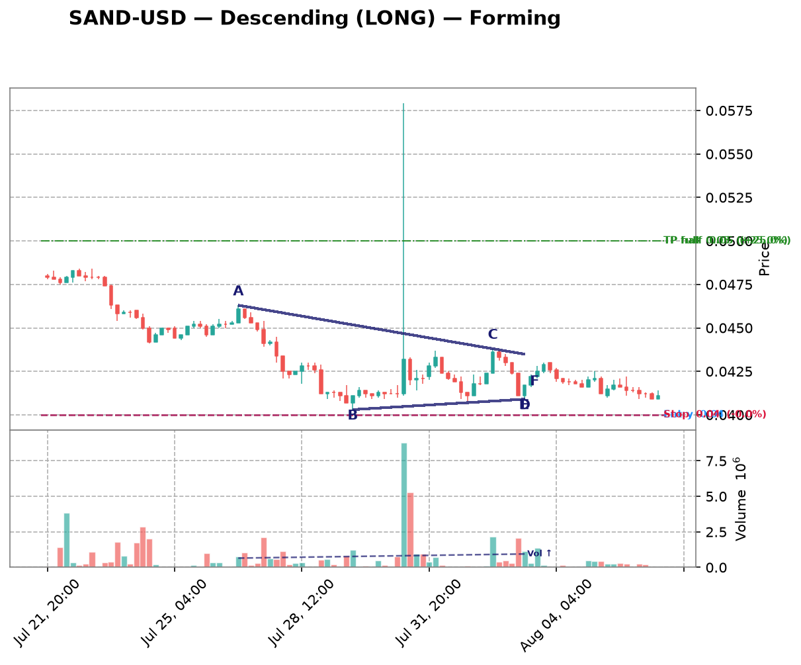
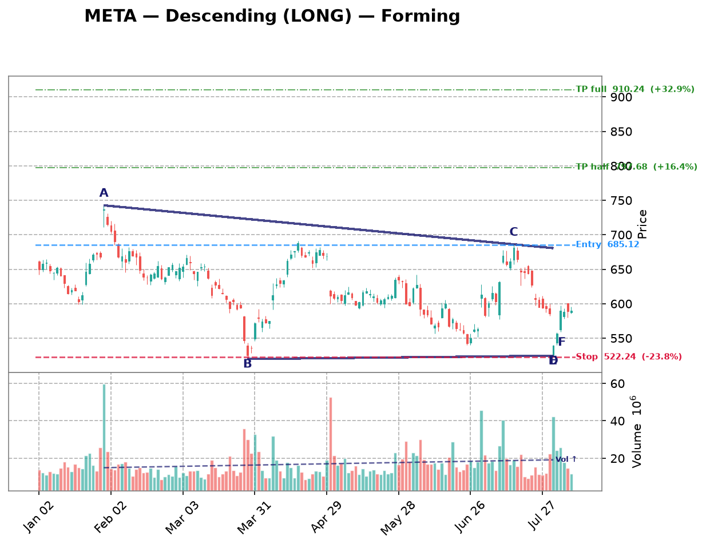

| Date | Symbol | TF | Pattern | Dir | Verdict | Claude Pattern | Claude Dir | Conf | Rec |
|---|---|---|---|---|---|---|---|---|---|
| crypto 10 patterns | |||||||||
| 2026-08-22 | DOGE-USD | 1d | Descending | LONG | Disputed | ? | ? | Certainty: 82 | — |
Chart  Claude Notes The right edge of the chart (late July into Aug 04) shows price flattening out into a tight, low-volatility range around 0.069-0.075, but this looks more like consolidation/basing after a sustained downtrend than a descending triangle. There's no clear descending upper trendline with distinct lower highs converging into a flat support - instead price has already compressed into a narrow horizontal band with both highs and lows roughly flat, resembling a rectangle/range rather than a converging triangle. Volume has also dried up substantially, consistent with consolidation rather than an active triangle squeeze. I don't see the classic descending triangle structure (series of lower highs against a flat support) with enough touch points - the 'lower highs' are too subtle and the pattern looks more like sideways chop after a big drop from ~0.115 to ~0.07. I disagree with the algorithm's flag; this is better characterized as a flat consolidation/basing pattern, not a well-defined descending triangle. Presence certainty 82/100 — how sure Claude is that its found/not-found call is correct | |||||||||
| 2026-08-22 | XRP-USD | 1d | Descending | LONG | Disputed | ? | ? | Certainty: 80 | — |
Chart  Claude Notes The right side of the chart (late June through early August) shows price consolidating in a tight, roughly flat range between ~1.03 and ~1.15, but there's no clear descending upper trendline with lower highs - the highs are essentially flat, not falling. This looks more like a flat/rectangular consolidation after a strong downtrend rather than a descending triangle. The algorithm's flag doesn't hold up well since a descending triangle requires a clearly falling resistance line with a flat support, but here both boundaries appear roughly horizontal with no strong convergence visible. Overall this resembles range-bound consolidation at the bottom of a downtrend rather than a triangle pattern with an apex forming. Presence certainty 80/100 — how sure Claude is that its found/not-found call is correct | |||||||||
| 2026-08-22 | VET-USD | 1d | Descending | LONG | Disputed | ? | ? | Certainty: 78 | — |
Chart  Claude Notes The right side of the chart (late June through August) shows price oscillating in a tight, roughly flat and directionless range around 0.0045-0.0050 after a sharp downtrend. There's no clear descending upper trendline with sequentially lower highs, nor a clean flat support - both boundaries look essentially flat/sideways with overlapping candles, more consistent with basing/consolidation or a minor range than a converging descending triangle. The algorithm may be reacting to the prior downtrend into this range, but the compression itself lacks distinct diagonal resistance line with lower highs - the highs are roughly flat, not descending. This looks more like a flat consolidation box than a triangle apex forming. Presence certainty 78/100 — how sure Claude is that its found/not-found call is correct | |||||||||
| 2026-08-22 | ETH-USD | 1d | Symmetric | SYMMETRIC | Disputed | ? | ? | Certainty: 78 | — |
Chart  Claude Notes The right side of the chart (mid-July to end) shows price consolidating in a tight, roughly flat range between ~1850 and ~1950, not a converging wedge. Both the recent highs and lows are essentially horizontal, resembling a flat/rectangular consolidation rather than a symmetric triangle with clear converging trendlines. There's no obvious series of lower highs and higher lows narrowing toward an apex - the candles are just oscillating sideways with similar range width throughout June-July. The algorithm likely mistook general price compression after the big May-June decline for a triangle, but the touch points don't show a clean converging structure with 2+ distinct trendline touches on each side that narrow progressively. Presence certainty 78/100 — how sure Claude is that its found/not-found call is correct | |||||||||
| 2026-08-22 | SOL-USD | 1d | Symmetric | SYMMETRIC | Disputed | ? | ? | Certainty: 68 | — |
Chart  Claude Notes From late June through late July price shows a mild downtrend with lower highs (82->79->78->76) but the lows are flat to slightly declining (~73-76), not rising, so this is more a shallow downtrend/tight range than a converging symmetric triangle. There's no clear rising support line meeting a falling resistance line at an apex - both lines are nearly flat and roughly parallel, resembling consolidation/channel rather than a compressing wedge. Volume is also declining but that alone doesn't confirm a triangle. I disagree with the algorithm's symmetric label; the recent price action looks more like a flat consolidation/minor downtrend than a clear triangle. Presence certainty 68/100 — how sure Claude is that its found/not-found call is correct | |||||||||
| 2026-08-22 | MANA-USD | 4h | Ascending | SHORT | Disputed | ? | ? | Certainty: 82 | — |
Chart  Claude Notes The right-hand section (late July into August) shows price oscillating in a tight, roughly flat range between ~0.0655 and ~0.0680 with no clear converging trendlines - it looks more like a flat consolidation/rectangle than a triangle. There's no rising lower support line (lows are flat to slightly declining, not making higher lows), so the 'ascending triangle' label doesn't fit well. The broader chart shows a downtrend from mid-July highs (~0.0755) into this current range, with the last few candles drifting sideways-to-slightly-down near 0.065-0.067. No clear 2-3 touch convergence pattern is visible on both sides near the right edge; it resembles range-bound noise rather than a textbook or even loose triangle. Presence certainty 82/100 — how sure Claude is that its found/not-found call is correct | |||||||||
| 2026-08-22 | SAND-USD | 4h | Descending | LONG | Disputed | ? | ? | Certainty: 75 | — |
Chart  Claude Notes The right side of the chart shows price trading in a fairly flat, choppy range between roughly 0.0405 and 0.0435 since around Jul 28-29, without a clear converging structure. There's no consistent descending upper trendline (highs bounce around 0.043-0.044 repeatedly rather than making progressively lower highs) and the lower boundary is also roughly flat rather than rising. This looks more like a horizontal consolidation/range than a descending triangle, which requires a clearly declining resistance line. I don't see strong evidence of convergence toward an apex - the price action looks like sideways chop with similar high and low ranges throughout, not a tightening wedge. Presence certainty 75/100 — how sure Claude is that its found/not-found call is correct | |||||||||
| 2026-08-22 | XLM-USD | 3h | Descending | LONG | Disputed | ? | ? | Certainty: 88 | — |
Chart  Claude Notes The right side of the chart shows a clear, strong downtrend from ~0.195 (Jul 21) down to ~0.160 (early Aug) with lower highs and lower lows throughout — this is a persistent decline, not a converging consolidation. There's no rising lower support line; lows keep dropping (0.177 -> 0.170 -> 0.167 -> 0.160), and highs also keep dropping, so the lines are roughly parallel/descending together rather than converging into an ascending triangle. The algorithm's 'Ascending' label doesn't fit since there's no flat resistance with rising support — instead price has already broken down repeatedly with no containment. This looks like a clean downtrend/channel, not a triangle pattern forming near the apex. Presence certainty 88/100 — how sure Claude is that its found/not-found call is correct | |||||||||
| 2026-08-22 | ETC-USD | 3h | Descending | LONG | Disputed | ? | ? | Certainty: 82 | — |
Chart  Claude Notes This chart shows a clear, sustained downtrend from ~7.4 in early July to ~6.4-6.6 by early August, with a series of lower highs and lower lows across multiple swings (not just at the right edge). There is no flat/horizontal support line - the price has been making progressively lower lows throughout the entire chart, and the right edge shows price consolidating in a tight range around 6.5-6.65 without clear compression between converging trendlines. The recent price action (last ~15-20 candles) looks more like a tight sideways consolidation/flag rather than a descending triangle apex, since the lower boundary is not flat (it's part of the broader downtrend) and there isn't a clean, sustained higher-low structure hitting a rising support line. This looks like a downtrend with consolidation, not a credible descending triangle setup - I disagree with the algorithm's flag as there isn't clear evidence of 2+ well-defined touches on a flat support combined with a descending resistance converging toward it in the recent price action. Presence certainty 82/100 — how sure Claude is that its found/not-found call is correct | |||||||||
| 2026-08-22 | VET-USD | 3h | Ascending | SHORT | Disputed | ? | ? | Certainty: 75 | — |
Chart  Claude Notes The right side of the chart shows a choppy, range-bound consolidation with roughly flat highs (~0.00465-0.0047) and flat-to-slightly-declining lows (~0.0046-0.0047), not a clear converging wedge. There's no consistent rising support line forming higher lows - the recent candles show lows near 0.0046 similar to earlier lows, and the price action is more of a sideways drift with a mild downtrend than a compressing triangle. The algorithm's ascending triangle call doesn't hold up since the lower boundary isn't clearly rising - it's flat to slightly falling, and the upper boundary is also flat rather than being tested repeatedly. This looks more like consolidation/minor downtrend than a true triangle formation with clear apex convergence. Presence certainty 75/100 — how sure Claude is that its found/not-found call is correct | |||||||||
| crypto-equity 5 patterns | |||||||||
| 2026-08-22 | MSTR | 3h | Descending | LONG | Disputed | ? | ? | Certainty: 70 | — |
Chart  Claude Notes Price action from mid-July through early August is a fairly flat, choppy range between roughly 90-100 with no clear convergence. Highs are not consistently declining (99-100 seen repeatedly into early August) and lows are not consistently rising (dips to 90-92 recur), so there's neither a well-defined descending resistance line nor a strong ascending support line. This looks more like sideways consolidation/noise than a genuine descending triangle. The algorithm likely picked up on the general range-bound compression, but the touch points don't cleanly respect converging trendlines - it's closer to a rectangle/range than a triangle. Presence certainty 70/100 — how sure Claude is that its found/not-found call is correct | |||||||||
| 2026-08-09 | MSTR | 1h | Ascending | SHORT | Disputed | ? | ? | Certainty: 78 | — |
Chart  Claude Notes The right-side price action (late Aug 5 into Aug 6) shows a decline from ~99 to ~96.5 with lower highs and lower lows together — this looks like a mild downtrend/pullback rather than a converging triangle with a rising support line. There's no clear rising trendline of higher lows; instead both highs and lows are declining in tandem, more consistent with a small descending channel or simple retracement than an ascending triangle. No flat resistance line is visible either (highs are dropping from ~99 to ~97.5 to ~97). I don't see the two clearly converging trendlines required for a valid triangle at the right edge, so I disagree with the algorithm's ascending triangle / short flag. Presence certainty 78/100 — how sure Claude is that its found/not-found call is correct | |||||||||
| 2026-08-09 | CIFR | 1h | Descending | LONG | Disputed | ? | ? | Certainty: 78 | — |
Chart  Claude Notes The chart shows a series of large swing oscillations (roughly 26->18->24->17->26->18->25->18) rather than a converging structure. Each swing has similar amplitude, indicating a broad trading range/downtrend with volatility rather than a narrowing triangle. Near the right edge, price is declining from ~25 to ~18-19 with no flattening support line or clear lower highs converging into an apex - the recent candles show a steady downward slide, not compression. There is no consistent horizontal support with descending highs; the swings are too wide and repetitive to qualify as a descending triangle. I disagree with the algorithm's flag - this looks like continued range-bound/down-trending price action, not a triangle nearing apex. Presence certainty 78/100 — how sure Claude is that its found/not-found call is correct | |||||||||
| 2026-08-09 | MARA | 1h | Descending | LONG | Disputed | ? | ? | Certainty: 78 | — |
Chart  Claude Notes {
"found_triangle": false,
"pattern_type": null,
"direction": null,
"presence_confidence": 78,
"pattern_quality": null,
"notes": "The chart shows an overall downtrend with successive lower highs (15, 14, 13, 12.7, 12) and lower lows (12, 11.8, 10.7, 10, 10.7), forming a descending staircase rather than a converging triangle. There's no flat/horizontal support line - the lows are also declining, not holding at a consistent level. At the right edge, price is consolidating in a tight range around 10.7-12 but without clear evidence of a rising lower boundary or flat lower support meeting a descending upper trendline with 3+ touches each. This looks more like a broader downtrend with intermittent consolidation than a well-defined descending triangle. The algorithm's flag is plausible given the recent narrowing range, but the lower boundary isn't flat - it's still sloping down, making this more consistent with a bearish channel/flag than a classic descending triangle setup for a LONG bias, which would typically need a firm horizontal support.",
} Presence certainty 78/100 — how sure Claude is that its found/not-found call is correct | |||||||||
| 2026-08-09 | IREN | 1h | Symmetric | SYMMETRIC | Disputed | ? | ? | Certainty: 72 | — |
Chart  Claude Notes The chart shows a broad downtrend from late June (~57) into a choppy bottoming/ranging structure from mid-July through early August, oscillating between roughly 30 and 44 with multiple swing highs and lows of similar magnitude - more like a wide horizontal range than a converging wedge. Near the right edge (early August), price is bouncing between ~37-41 without clear narrowing of highs and lows; recent candles show similar range width to prior weeks rather than compression toward an apex. I don't see two clearly converging trendlines with consistent touch points - the swing highs (44, 43, 41) and lows (33, 30, 36) don't form a tight symmetric convergence, they look more like a rounded/ranging base. I disagree with the algorithmic flag; this looks more like consolidation/basing after a downtrend rather than a well-defined symmetric triangle. Presence certainty 72/100 — how sure Claude is that its found/not-found call is correct | |||||||||
| mega-cap 4 patterns | |||||||||
| 2026-08-22 | AMZN | 1d | Descending | LONG | Disputed | ? | ? | Certainty: 80 | — |
Chart  Claude Notes The right side of the chart shows a sharp rally from ~250 to ~287 in early August, followed by a short pullback to ~272-280. This is a strong upward impulse move with only 4-5 candles of consolidation afterward, not a converging triangle. There's no clear flat support line or descending resistance line with multiple touch points - just one big green breakout candle, a pause near the highs, and two down candles. This looks more like a bull flag or brief consolidation after a breakout rather than a descending triangle, which requires a flat support and lower highs converging over a more extended period. The algorithm likely misread the recent pullback candles as a descending triangle top, but there aren't enough touches (need 2+ clear highs declining and 2+ clear lows flat) to confirm this pattern. The broader chart shows a clear downtrend from May to late June, then a recovery/uptrend into August - no triangle consolidation is visible near the apex on the right edge. Presence certainty 80/100 — how sure Claude is that its found/not-found call is correct | |||||||||
| 2026-08-22 | NVDA | 1d | Descending | LONG | Disputed | ? | ? | Certainty: 80 | — |
Chart  Claude Notes The right side of the chart shows a sharp V-shaped reversal from ~190 (late July low) to a strong rally into the low 220s, not a converging triangle. There's no flat support with lower highs converging - instead price made a clear low around Jul 30 and has been rising steeply since, breaking above the prior swing highs (~215-217) from mid-July. This looks like an impulsive breakout/reversal move, not a descending triangle compression. The algorithm likely mistook the down-up swing structure from mid-June to late-July for a descending triangle, but there isn't a consistent flat support line with 2+ clean touches, nor a well-defined descending resistance line with multiple touches - the price action is too volatile and swing-like (channel-like oscillation) rather than a converging wedge. Presence certainty 80/100 — how sure Claude is that its found/not-found call is correct | |||||||||
| 2026-08-22 | META | 1d | Descending | LONG | Disputed | ? | ? | Certainty: 78 | — |
Chart  Claude Notes The right edge of the chart shows a choppy decline from ~685 down to ~525 and then a weak bounce back to ~590-600, but there's no clear convergence between an upper resistance line and a flat lower support line. Highs are irregular (bouncing between 630-685) and lows are also irregular (525-600), not forming consistent, well-touched trendlines. This looks more like a volatile downtrend/range than a descending triangle. I don't see at least 2-3 clean touches on a flat support level combined with 2-3 clean touches on a descending resistance line converging toward an apex. The algorithm's flag appears to be picking up on general downward price action rather than a genuine geometric triangle. Presence certainty 78/100 — how sure Claude is that its found/not-found call is correct | |||||||||
| 2026-08-22 | GOOGL | 4h | Ascending | SHORT | Not reviewed | ? | ? | — | — |
Chart  Claude Notes {
"found_triangle": false,
"pattern_type": null,
"direction": null,
"presence_confidence": 82,
"pattern_quality": null,
"notes": "The right side of the chart shows a strong uptrend from ~320 to a peak near 382, followed by a sharp pullback to ~357-360 over the last few candles. There is no clear flat resistance line being tested multiple times, nor a well-defined rising support line with multiple higher-low touches — instead price surged rapidly and then reversed sharply, which looks more like an impulsive rally and correction than a converging triangle. The algorithm's ascending triangle call appears to be based on the general uptrend and recent narrowing candles, but there aren't at least two credible touches on a flat/horizontal upper boundary; the highs are rising (382 is a new high, not a repeated ceiling). This looks like a breakout-and-pullback rather than a triangle consolidation.",
} | |||||||||
| semiconductors 3 patterns | |||||||||
| 2026-08-22 | ADI | 4h | Descending | LONG | Disputed | ? | ? | Certainty: 70 | — |
Chart Claude Notes The chart shows a clear downtrend from late June (~440) into early August (~355), followed by a modest basing/recovery bounce near the right edge (last ~8 candles rising slightly from ~355 to ~380). This looks more like a downtrend flattening into consolidation/support rather than a descending triangle. A descending triangle requires a flat support line with repeated tests and a clearly declining upper resistance with multiple lower highs converging toward it - here the most recent price action shows higher lows and higher closes (potential reversal), not compression into an apex. There's no clear flat horizontal support with 2+ touches and a distinct descending upper trendline with 2+ touches in the recent structure - the recent candles are actually breaking upward from the lows, suggesting the downtrend may be ending rather than a triangle forming. I disagree with the algorithm's flag as this looks more like a bottoming pattern than a defined descending triangle. Presence certainty 70/100 — how sure Claude is that its found/not-found call is correct | |||||||||
| 2026-08-09 | LRCX | 1h | Ascending | SHORT | Disputed | ? | ? | Certainty: 72 | — |
Chart  Claude Notes The right-side price action (early Aug) shows a choppy range between roughly 305-320, but there's no clear ascending support line—lows are flat/noisy (around 305-308) rather than making distinct higher lows, and the highs are also roughly flat (~315-320) rather than converging. This looks more like a horizontal consolidation/rectangle than a true ascending triangle. The algorithm likely flagged minor higher-low bumps, but there aren't 2-3 clean touch points forming a rising trendline distinct from a flat one. Prior to this, price action from mid-July was a clear downtrend with lower highs/lower lows, not a triangle. Given the ambiguity of the recent consolidation, I lean toward rejecting the triangle call, though a loose case for a shallow ascending structure isn't impossible. Presence certainty 72/100 — how sure Claude is that its found/not-found call is correct | |||||||||
| 2026-08-09 | AMAT | 1h | Symmetric | SYMMETRIC | Disputed | ? | ? | Certainty: 72 | — |
Chart  Claude Notes The right side of the chart shows a rally from ~500 to ~555 followed by a pullback to ~530, but this looks like a rounded top / pullback within a broader swing rather than a converging triangle. There's no clear sequence of lower highs meeting higher lows - the recent candles (Aug 03-08) show a peak around 555 then a fairly sharp drop to 530, which is more consistent with a short-term downtrend or consolidation than a symmetric wedge. I don't see at least two clean, roughly parallel converging trendlines with multiple touches on each side near the apex. The algorithm may be reacting to the general narrowing of range after the spike, but the touch points are too few and inconsistent to confirm a genuine symmetric triangle. Presence certainty 72/100 — how sure Claude is that its found/not-found call is correct | |||||||||
| forex 2 patterns | |||||||||
| 2026-08-09 | EURUSD=X | 1h | Ascending | SHORT | Disputed | ? | ? | Certainty: 82 | — |
Chart  Claude Notes The right side of the chart shows a clear downtrend from the Aug 5 peak (~1.156) into Aug 6, with lower highs and lower lows in a fairly consistent decline, followed by a flattening/consolidation near 1.1525-1.153. There's no clear rising support line with higher lows to form an ascending triangle - instead price dropped sharply and is now consolidating in a narrow range without a defined converging structure. The algorithm's ascending triangle call doesn't fit since there's no series of higher lows visible; the recent price action looks more like a sharp decline stabilizing at a new lower level rather than a triangle compression. Not enough touch points on both an upper and lower trendline to confirm any triangle pattern near the apex on the right edge. Presence certainty 82/100 — how sure Claude is that its found/not-found call is correct | |||||||||
| 2026-08-09 | NZDUSD=X | 1h | Ascending | SHORT | Disputed | ? | ? | Certainty: 78 | — |
Chart  Claude Notes The right side of the chart shows price consolidating in a choppy range between ~0.5865 and ~0.590 after a strong impulsive rally from late July. However, this looks more like a flat/rectangular consolidation than an ascending triangle - the highs are roughly flat (~0.590) but the lows are also fairly flat/choppy (~0.5865-0.587), not showing a clear rising sequence of higher lows. There's no clean converging trendline structure - both boundaries appear roughly horizontal rather than one flat and one rising. This resembles sideways consolidation or a minor pullback/flag after the breakout rather than a textbook ascending triangle with rising support. The algorithm's flag seems to be picking up on the tightening range but the specific 'rising lower trendline' criterion for ascending triangle isn't clearly satisfied here. Presence certainty 78/100 — how sure Claude is that its found/not-found call is correct | |||||||||
| hardware 2 patterns | |||||||||
| 2026-08-22 | DELL | 1d | Ascending | SHORT | Disputed | ? | ? | Certainty: 78 | — |
Chart  Claude Notes Price action from late May through early August shows a broad choppy range between roughly 370 and 465, oscillating up and down without clear convergence. There's no consistent flat resistance line or rising support line with multiple clean touches - highs and lows both vary significantly (e.g., peaks near 465, 460, 440, 485; lows near 370, 385, 400). This looks more like a wide trading range/consolidation than a converging triangle. The algorithm's ascending triangle call doesn't hold up since the resistance isn't flat (it varies from ~440 to ~485) and the 'higher lows' aren't consistently rising in a clean trendline fashion. No genuine apex compression is visible near the right edge - the last few candles show a pullback from a high, not a tightening range. Presence certainty 78/100 — how sure Claude is that its found/not-found call is correct | |||||||||
| 2026-08-09 | STX | 1h | Descending | LONG | Disputed | ? | ? | Certainty: 72 | — |
Chart  Claude Notes The right-side price action (Aug 03–06) shows a choppy, roughly flat range between ~815 and ~890 with no clear convergence — highs and lows are similarly spaced throughout rather than narrowing toward an apex. There's a sharp downside wick near Aug 06 breaking below the recent range low (~780), which argues against a clean descending triangle setup (support was violated, not respected). I don't see a consistent flat support line with lower highs converging into it; instead it looks like sideways consolidation/noise with one outlier spike down. Not enough clean touch points on both a flat lower line and a descending upper line to call this a credible descending triangle. Presence certainty 72/100 — how sure Claude is that its found/not-found call is correct | |||||||||
| space 2 patterns | |||||||||
| 2026-08-22 | GSAT | 1d | Descending | LONG | Disputed | ? | ? | Certainty: 85 | — |
Chart  Claude Notes The chart shows a broad downtrend from late May through late July (lower highs and lower lows spanning ~85 to ~79), followed by a sharp gap-up breakout in early August that jumped straight from ~79 to ~84 on a large green candle. There's no visible compression or convergence of trendlines near the right edge - instead there's a decisive breakout candle with expanding range, then a small consolidation of only 2-3 candles at the very right edge, which is too brief to establish two touch points on each side. This looks like a completed breakout/reversal rather than a forming descending triangle. The algorithm likely misread the prior downtrend as the descending resistance line, but there's no clear flat support line with multiple touches - the lows before the breakout were still declining (79.5 to 78.7), not flat. Presence certainty 85/100 — how sure Claude is that its found/not-found call is correct | |||||||||
| 2026-08-22 | SPCE | 4h | Descending | LONG | Disputed | ? | ? | Certainty: 68 | — |
Chart  Claude Notes Price shows a sharp downtrend from early June (~4.5-6.0) into a bottoming/basing pattern around 2.5-2.7 from mid-July onward, then a slight uptick near early August (~2.9-3.0). This is not a descending triangle - there's no clear flat support line with repeated touches and a descending resistance line converging toward it. Instead, price flattened out into a tight consolidation range (roughly 2.5-3.0) for several weeks with fairly parallel/flat boundaries, more resembling a basing/rectangle structure than a converging triangle. The recent right-edge action shows price breaking slightly higher out of the consolidation range rather than compressing toward an apex. I don't see the required lower-highs pattern converging with a flat support - highs in the last few weeks are roughly flat/rising (2.7-3.0), not descending. This disagrees with the algorithm's descending triangle call. Presence certainty 68/100 — how sure Claude is that its found/not-found call is correct | |||||||||
| adtech 1 pattern | |||||||||
| 2026-08-22 | U | 1d | Ascending | SHORT | Disputed | ? | ? | Certainty: 88 | — |
Chart  Claude Notes The chart shows a clear uptrend with a strong breakout rally into the right edge, not a converging triangle. Price rose steadily from late July through early August with a large green candle breaking to new highs (~41) on heavy volume, well above any prior resistance. There's no flat/descending upper resistance line being tested multiple times - instead price is accelerating upward with expanding range, the opposite of compression. The algorithm's ascending triangle flag doesn't hold up because there's no clear horizontal ceiling being repeatedly tested; the recent candles show expansion and breakout, not consolidation into an apex. This looks like a continuation/breakout move rather than a triangle formation. Presence certainty 88/100 — how sure Claude is that its found/not-found call is correct | |||||||||
| commodities 1 pattern | |||||||||
| 2026-08-22 | NEM | 4h | Descending | LONG | Disputed | ? | ? | Certainty: 80 | — |
Chart  Claude Notes The chart shows a clear downtrend from mid-June highs (~112) into a low around July 17-19 (~89-90), followed by a recovery/uptrend into early August reaching ~105. This is a V-shaped reversal, not a converging triangle. There's no descending resistance line with lower highs near the right edge - instead price has been making higher highs and higher lows since the July low, indicating an uptrend/recovery, not compression into an apex. The right edge shows continued upward momentum (Aug 03-06 candles pushing to new local highs ~105-106) rather than consolidation between converging trendlines. No credible flat support with descending resistance is visible in the recent price action; the algorithm's descending triangle flag appears to be a false positive based on the overall down-then-up structure rather than an actual converging pattern. Presence certainty 80/100 — how sure Claude is that its found/not-found call is correct | |||||||||
| fintech 1 pattern | |||||||||
| 2026-08-22 | SOFI | 1d | Descending | LONG | Disputed | ? | ? | Certainty: 75 | — |
Chart  Claude Notes The right edge of the chart shows a sharp selloff (drop from ~18.5 to ~15) followed by a strong V-shaped recovery back to ~18.5, with a large volume spike on the low candle. This is a reversal/whipsaw pattern, not a converging triangle. There's no clear flat support with descending resistance - instead price plunged and then rallied aggressively in just a few candles, breaking any potential trendline structure. The overall chart shows a broader oscillating range (16-20) but no clean convergence is visible near the right edge; the recent price action is too volatile and directional (V-recovery) to constitute a descending triangle. I disagree with the algorithmic flag - there are not enough touch points on both a flat support and declining resistance line near the right side to confirm this pattern. Presence certainty 75/100 — how sure Claude is that its found/not-found call is correct | |||||||||
| industrials 1 pattern | |||||||||
| 2026-08-09 | RCL | 1h | Ascending | SHORT | Disputed | ? | ? | Certainty: 80 | — |
Chart  Claude Notes The right side of the chart shows price oscillating in a fairly flat range between ~318 and ~330 after a strong impulsive rally from late July. There's no clear rising lower support line - the recent lows (~320-322) are roughly flat or even slightly declining, not making higher lows as required for an ascending triangle. The highs are also roughly flat (~328-330) rather than converging with the lows. This looks more like a consolidation/range or minor pullback after a strong uptrend rather than a converging triangle. I don't see two clear trendlines converging toward an apex - the pattern lacks the compression structure needed. Disagreeing with the algorithm's ascending triangle flag; the structure is closer to a flat consolidation/rectangle than a triangle with rising support. Presence certainty 80/100 — how sure Claude is that its found/not-found call is correct | |||||||||
| internet 1 pattern | |||||||||
| 2026-08-22 | SNAP | 1d | Descending | LONG | Disputed | ? | ? | Certainty: 80 | — |
Chart  Claude Notes The chart shows a clear downtrend from late April through mid-June (roughly 6.3 to 4.3), followed by a choppy basing/consolidation period between ~4.3 and ~5.0 through July, then a sharp breakout spike to ~5.8 in early August followed by a pullback. There's no clear converging triangle structure near the right edge - the recent price action shows an impulsive gap-up move and retracement, not a compression pattern with defined trendlines. The 'descending triangle' call doesn't hold up: there's no flat support line with consistent lower highs converging into it. The right-most candles show volatile, wide-range bars after a volume spike, which looks more like a breakout/reversal than triangle consolidation. I disagree with the algorithm's flag. Presence certainty 80/100 — how sure Claude is that its found/not-found call is correct | |||||||||